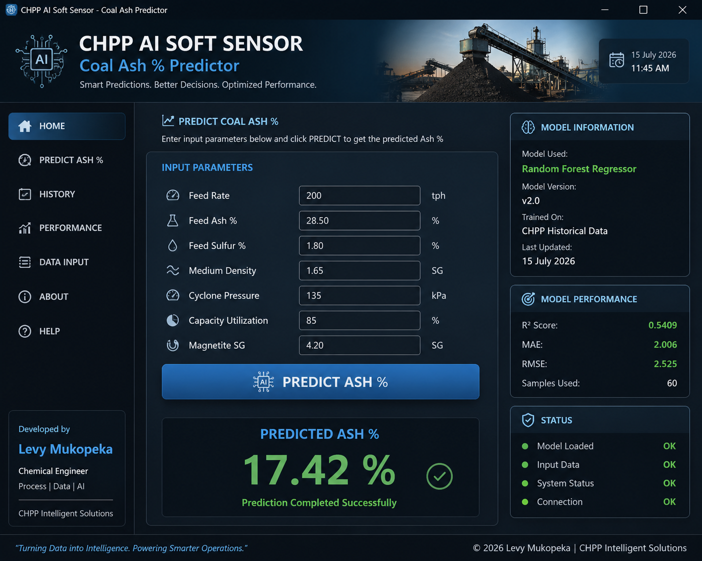

PRODUCT RESPONSE · 01
Model vs uncertainty influenceNuts Ash
Interactive chart unavailable. All values remain available in the comparison matrix.
An independently developed portfolio of process-engineering and industrial-AI systems covering coal-quality prediction, process performance, uncertainty analysis and engineering decision support.
ENGINEERING PROBLEM
Coal preparation decisions are made while the process is operating, while laboratory quality measurements require sampling, preparation and analysis. The resulting time gap can make it difficult to see emerging product-quality risk early enough.
The project investigated whether routinely available process variables could be used to estimate product ash continuously, then combine that prediction with uncertainty analysis and scenario testing.
The featured prototype connects process operating conditions to product-quality prediction, uncertainty analysis and operator-facing interpretation. The interface was designed around a simple engineering chain: understand the current process state, estimate likely product quality, quantify risk, investigate the drivers and identify what deserves attention.

SYSTEM ARCHITECTURE
The system was designed as a layered decision-support workflow rather than a standalone machine-learning model. Engineering context sits underneath the analytics so that predictions can be interpreted in terms of operating conditions and product specifications.
FIVE ENGINEERING QUESTIONS
Current operating conditions are compared with defined process ranges and status logic.
Soft-sensor models estimate product ash from routinely available process variables.
Uncertain inputs are propagated through Monte Carlo simulation to produce probability-based outputs.
Model relationships, sensitivity and process-variable behaviour support investigation of potential drivers.
The interface turns model outputs into practical areas for operator attention rather than automatic control actions.
INTELLIGENT SOFT SENSORS
Historical process and quality data were used to investigate predictive models for product ash, creating an intelligent-sensor concept that can estimate quality from routinely available process variables.
A separate modelling stream investigated whether field and online measurements could estimate laboratory ash. Model comparison included regression, gradient boosting and random forest approaches with validation diagnostics.
MACHINE LEARNING
Multiple algorithms were investigated so the modelling stage could be treated as an engineering model-selection problem rather than assuming one algorithm was automatically appropriate.
| Model | Role in development | Engineering interpretation |
|---|---|---|
| Multiple Linear Regression | Baseline relationship | Establishes a simple, interpretable reference between process inputs and product quality. |
| Polynomial Regression | Nonlinear functional form | Tests whether curvature improves on the linear baseline. |
| Decision Tree | Non-linear rule structure | Useful for investigating threshold-like relationships and interpretable splits. |
| Random Forest | Ensemble prediction | Captures non-linear interactions with an ensemble of decision trees. |
| Gradient Boosting | Sequential ensemble | Builds predictive performance by correcting previous model errors. |
| XGBoost | Boosted prediction layer | Used as an advanced boosting model within the industrial-AI prototype. |
Model performance is treated as dataset- and validation-dependent. The portfolio will report measured development and validation results from the underlying project rather than presenting a model as universally accurate.
MODEL VALIDATION
The validation notebook benchmarked candidate models using cross-validation. The table below records the measured mean validation metrics from that experiment. Negative mean R² values indicate that, under that validation setup, the tested models did not consistently outperform the mean-target baseline; this is retained as a technical result rather than hidden.
| Model | Mean R² | Mean MAE | Mean RMSE |
|---|---|---|---|
| Multiple Linear Regression | -0.0076 | 1.3913 | 1.6118 |
| Polynomial Regression | -0.0184 | 1.3951 | 1.6203 |
| Decision Tree | -0.4540 | 1.8968 | 2.2946 |
| Random Forest | -0.0760 | 1.4218 | 1.6647 |
| Gradient Boosting | -0.0674 | 1.4149 | 1.6588 |
| XGBoost | -0.0645 | 1.4124 | 1.6559 |
| Model | Mean R² | Mean MAE | Mean RMSE |
|---|---|---|---|
| Multiple Linear Regression | -0.0180 | 1.0505 | 1.2127 |
| Polynomial Regression | -0.0347 | 1.0549 | 1.2227 |
| Decision Tree | -0.9939 | 1.3918 | 1.6967 |
| Random Forest | -0.0716 | 1.0618 | 1.2443 |
| Gradient Boosting | -0.0689 | 1.0620 | 1.2426 |
| XGBoost | -0.0656 | 1.0600 | 1.2407 |
FEATURE IMPORTANCE + SENSITIVITY
MODEL + UNCERTAINTY ANALYSIS
Compare predictive contribution with the influence of uncertain operating inputs on Nuts Ash and Peas Ash.
Interactive chart unavailable. All values remain available in the comparison matrix.
Interactive chart unavailable. All values remain available in the comparison matrix.
VARIABLE DETAIL
| Variable | Nuts XGBoost | Nuts Monte Carlo | Peas XGBoost | Peas Monte Carlo |
|---|---|---|---|---|
| Feed Ash | 61% | 33% | 58% | 35% |
| Feed Rate | 17% | 29% | 18% | 28% |
| Density | 14% | 20% | 16% | 20% |
| Pressure | 8% | 18% | 7% | 18% |
MONTE CARLO RISK ENGINE
The risk layer propagates uncertain operating variables through the prediction model. Instead of asking only “what is the predicted ash?”, the analysis asks “what range of ash is plausible, and how often could the specification be exceeded?”
NUTS ASH · MONTE CARLO SUMMARY
Risk visualization unavailable. All reported statistics remain visible below.
REPORTED NUTS ASH RESULTS
PRODUCT SUMMARY · 01
PRODUCT SUMMARY · 02
WHAT-IF SCENARIO ANALYSIS
The scenario engine changes one operating variable at a time around a baseline and observes the modelled product response. This provides a structured way to investigate sensitivity without claiming that the model alone determines the correct operating action.
REFERENCE CONDITION
DISPLAYED SCENARIO EXPLORER
PRODUCT RESPONSE
Scenario chart unavailable. The complete scenario comparison remains readable below.
SCENARIO COMPARISON
| Scenario | Peas Ash | Nuts Ash | Specification | Status |
|---|---|---|---|---|
| High Feed Ash | 22.66% | 23.67% | 22.00% | Exceeds specification |
| High Feed Rate | 21.32% | 22.27% | 22.00% | Exceeds specification |
| Low Feed Ash | 19.12% | 19.66% | 22.00% | Within specification |
DECISION SUPPORT
The current system is an industrial-AI prototype for analysis and decision support. It does not directly manipulate plant equipment and is not presented as autonomous process control. A future implementation could connect validated models to live plant data through appropriate SCADA/PLC or historian interfaces, subject to engineering validation, cybersecurity and operational governance.
TECHNICAL EVIDENCE